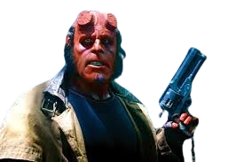
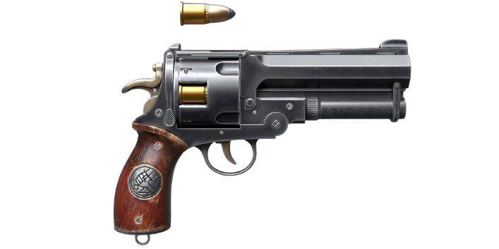
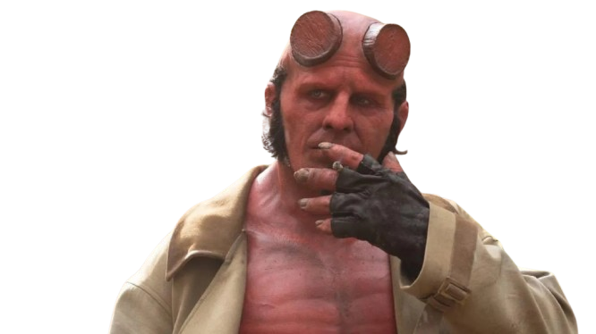

The Hellboy Series

Ron Perlman's Hellboy:
The original Hellboy movies from 2004 and 2008 will always hold a special place in my heart.

Hellboy 2019 Reboot:

The original Hellboy movies from 2004 and 2008 will always hold a special place in my heart.